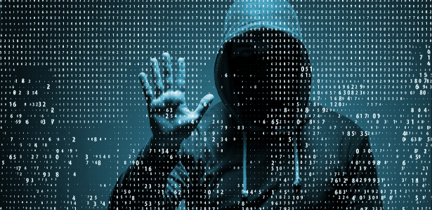

Talvez os criadores de malware mais perigosos sejam os hackers e grupos de hackers que criam programas de software maliciosos com o intuito de alcançar seus próprios objetivos criminosos. Esses criminosos virtuais criam programas com vírus de computador e cavalos de Troia que podem:
As classificações existentes para os crimes cibernéticos não são eficazes, devido à dinâmica dos computadores e da Internet. A evolução proporcionada por eles é muito grande, assim como as novas formas delitivas que vão surgindo. Dessa maneira, as classificações se tornam obsoletas em pouco tempo.
Entretanto, há duas classificações mais presentes na doutrina. Crimes cibernéticos puros, mistos e comuns e crimes cibernéticos próprios e impróprios.
Crimes cibernéticos puros podem ser definidos como "toda e qualquer conduta ilícita que tenha por objetivo exclusivo o sistema de computador, seja pelo atentado físico ou técnico do equipamento e seus componentes, inclusive dados e sistemas". O agente objetiva atingir o computador, o sistema de informática ou os dados e as informações neles utilizadas. É aqui que entram as condutas de praticadas por hackers, que são pessoas com amplo conhecimento informático, utilizado para invadir ou prejudicar servidores e sistemas. Muitas vezes sem nenhuma razão aparente.
Já os crimes cibernéticos mistos “são aqueles em que o uso da internet ou sistema informático é condição sine qua non para a efetivação da conduta, embora o bem jurídico visado seja diverso ao informático”. O agente não visa o sistema de informática e seus componentes, mas a informática é instrumento indispensável para consumação da ação criminosa. Ocorre, por exemplo, nas transferências ilícitas de valores em uma home-banking.
Os crimes cibernéticos comuns, portanto, são aqueles que utilizam a Internet apenas como instrumento para a realização de um delito já tipificado pela lei penal. A Rede Mundial de Computadores, acaba por ser apenas mais um meio para a realização de uma conduta delituosa. Se antes, por exemplo, a pornografia infantil era instrumentalizada através de vídeos e fotografias, hodiernamente, se dá através das home-pages. Mudou-se a forma, mas a essência do crime permanece a mesma.
Nessa classificação os crimes próprios são aqueles que em que o sistema informático do sujeito passivo é o objeto e o meio do crime. “São aqueles em que o bem jurídico protegido pela norma penal é a inviolabilidade das informações automatizadas (dados).”
Os crimes cibernéticos impróprios seriam aqueles que atingem um bem jurídico comum, como o patrimônio, e utilizam dos sistemas informáticos apenas como animus operandi, ou seja, um novo meio de execução.
